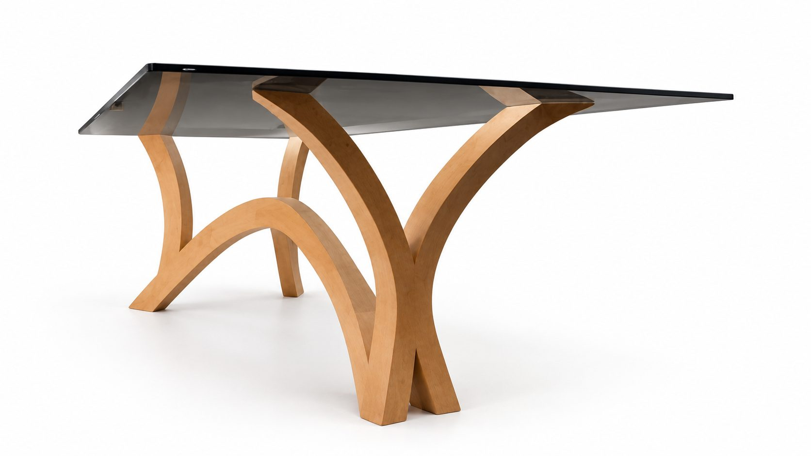
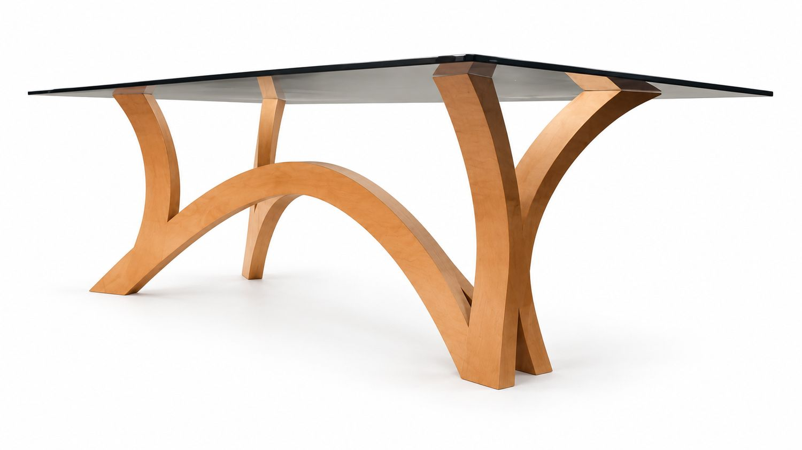
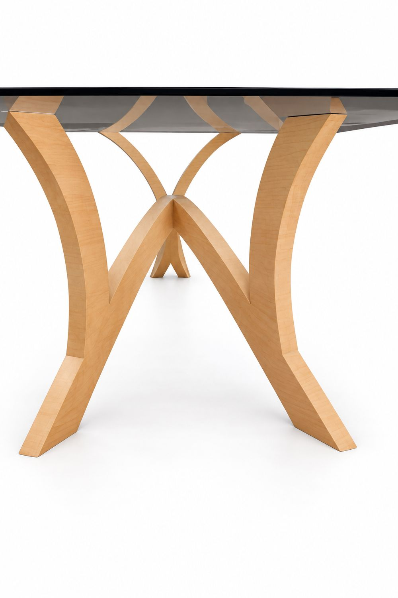
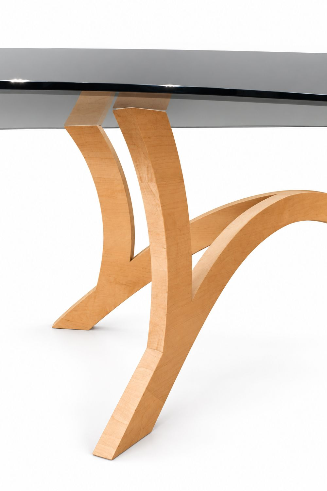

WORK 19 / 29
Ram Table
A sculptural dining table designed around gathering.
Year2015
MaterialsTimber and glass
StageLimited edition

DESIGN STORY
Ram Table is shaped around the idea of gathering. Its branching timber support lends the dining table a distinctive sculptural rhythm, while the broad top creates room for shared meals, conversation and exchange. The work connects expressive form with the ordinary rituals that bring people together.


